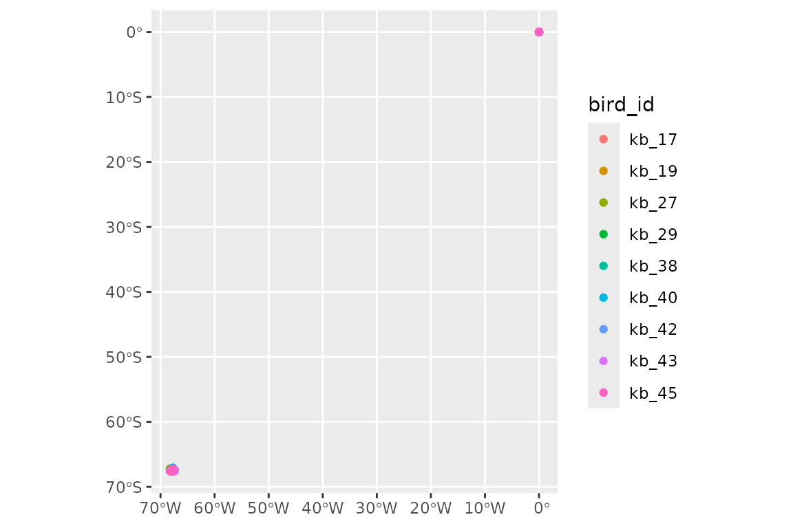
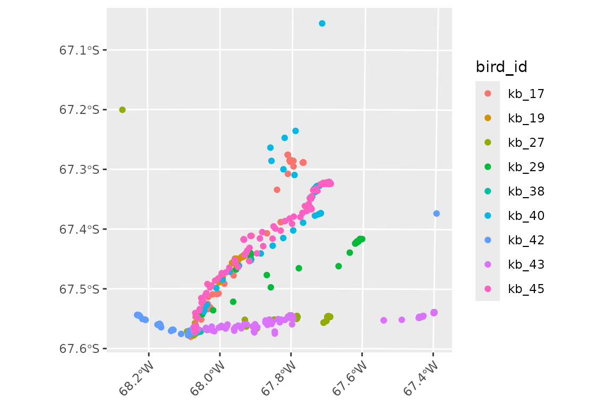
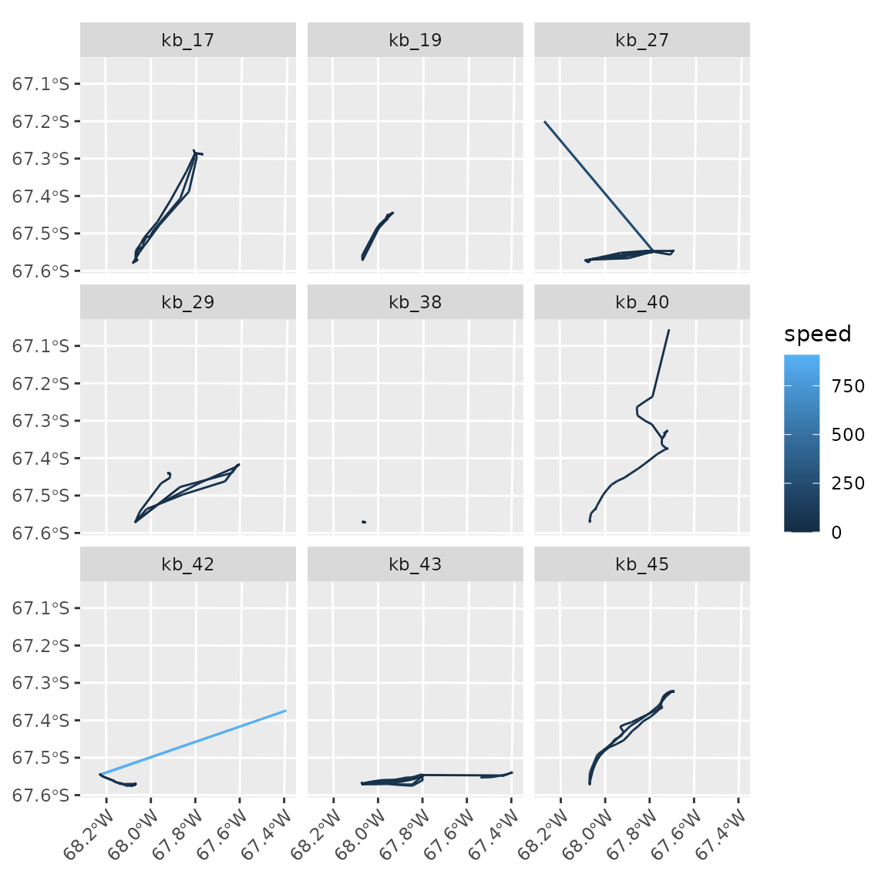
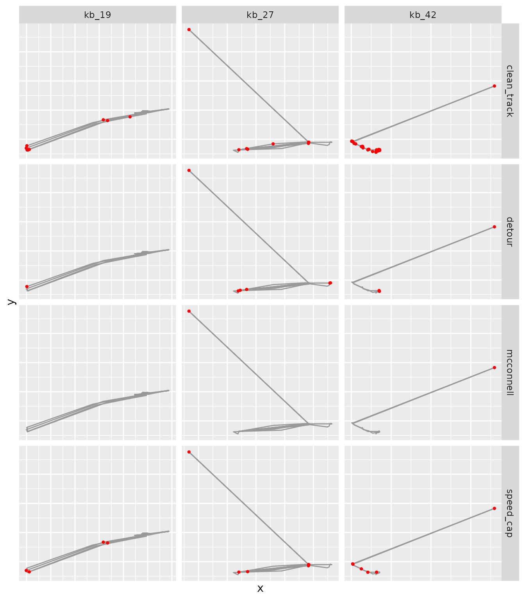
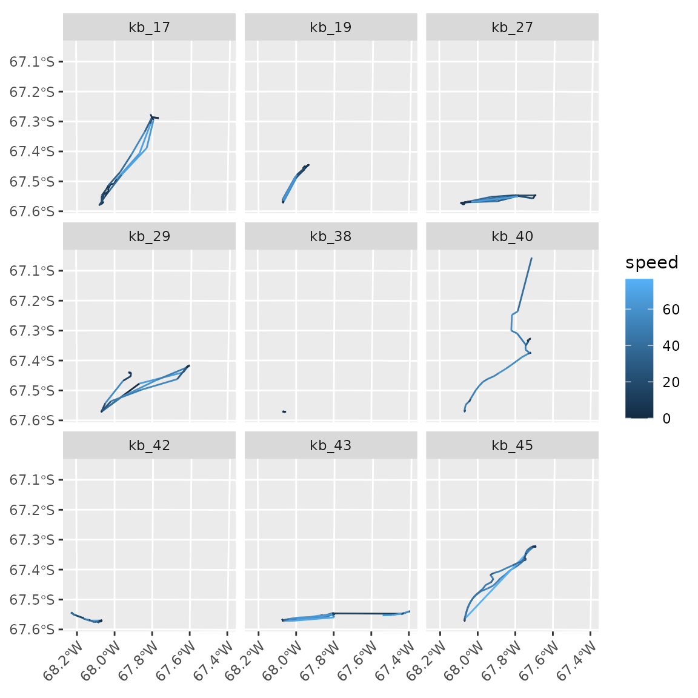
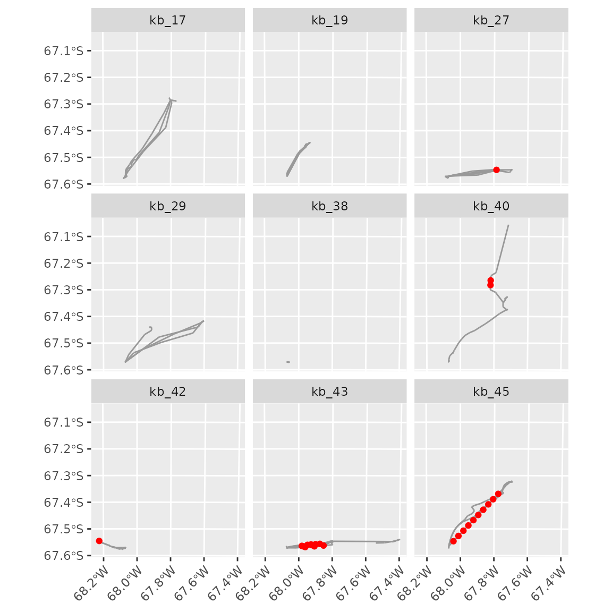
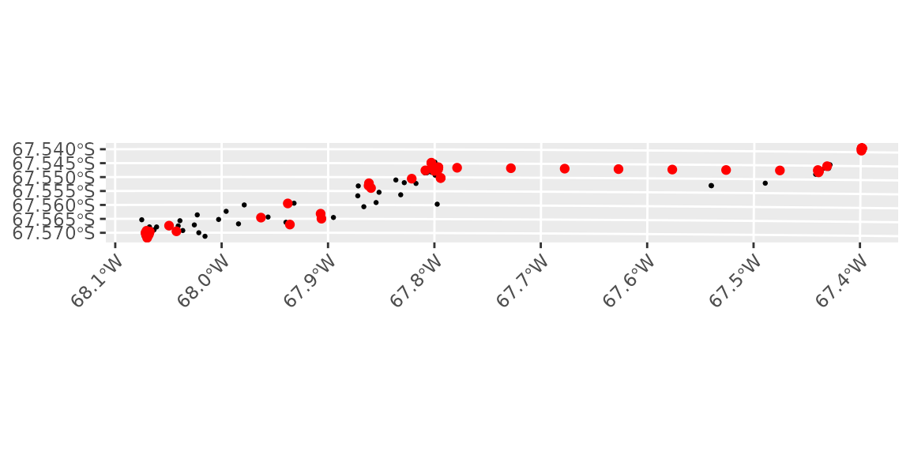
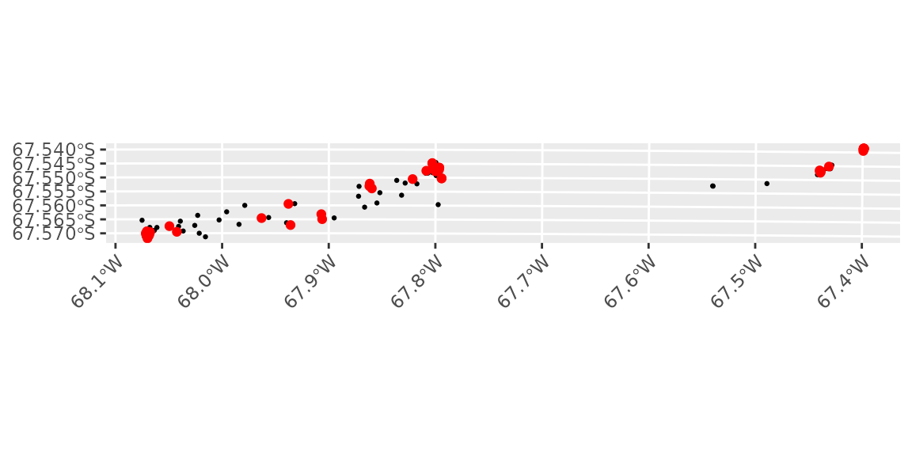

Data from tracking devices are rarely ready for analysis. Loggers may fail to get a fix and record a dummy location instead, the same record may be downloaded twice, some locations may be far from the true position of the animal, and the interval between fixes may vary. This article shows how to read tracking data into a tibble of tracks, and how to find and fix these problems, one step at a time, inspecting the data after each step.
We use the Antarctic shag tracks from the main vignette
(vignette("tidytracks")), to which we added some of the
errors that are typical of raw tracking data. Remember that these data
were modified to show the functionality of tidytracks, and
should not be used for analyses of shag movement. All the files used in
this article are in the directory vignettes/articles/data
of the source code of the package.
Reading data
tt_read_data() reads a table of events from a CSV file
(or from a data.frame). The table must have a column
identifying the track of each event, two columns with the coordinates,
and the date-time of each event, either in a single column or in
separate date and time columns (see the main vignette for more
details).
Date-time formats
Date-times are stored in many different formats. If
format_date_time is not given, tt_read_data()
tries a set of common formats: dates as year-month-day, day/month/year
or month/day/year (with / or - as separators),
followed by the time as hours:minutes:seconds or hours:minutes. To see
how this works, we use three small files with the first five locations
of bird kb_17, each with its date-times in a different
format.
Separate date and time columns
In the first file, the date (as day/month/year) and the time are in separate columns:
read.csv("data/shags_dates_dmy.csv")
#> bird_id date time lon lat
#> 1 kb_17 04/01/2022 00:09:13 -68.06908 -67.57072
#> 2 kb_17 04/01/2022 00:19:07 -68.06889 -67.57077
#> 3 kb_17 04/01/2022 00:29:06 -68.06904 -67.57065
#> 4 kb_17 04/01/2022 00:39:05 -68.06894 -67.57073
#> 5 kb_17 04/01/2022 00:49:04 -68.06892 -67.57067We give both columns to col_date_time, and they are
combined into a single date_time column:
shags_dmy <- tt_read_data(
events = "data/shags_dates_dmy.csv",
col_track_id = "bird_id",
col_coords = c("lon", "lat"),
col_date_time = c("date", "time")
)
event_time(shags_dmy)
#> [1] "2022-01-04 00:09:13 UTC" "2022-01-04 00:19:07 UTC"
#> [3] "2022-01-04 00:29:06 UTC" "2022-01-04 00:39:05 UTC"
#> [5] "2022-01-04 00:49:04 UTC"The format was detected correctly. Note that, by default, date-times
are assumed to be in UTC (time_zone = "UTC"), and
coordinates to be longitude and latitude on WGS 84
(crs = 4326).
Month/day/year dates
In the second file, the dates are given as month/day/year:
read.csv("data/shags_dates_mdy.csv")
#> bird_id date_time lon lat
#> 1 kb_17 01/04/2022 00:09:13 -68.06908 -67.57072
#> 2 kb_17 01/04/2022 00:19:07 -68.06889 -67.57077
#> 3 kb_17 01/04/2022 00:29:06 -68.06904 -67.57065
#> 4 kb_17 01/04/2022 00:39:05 -68.06894 -67.57073
#> 5 kb_17 01/04/2022 00:49:04 -68.06892 -67.57067These dates are ambiguous: 01/04/2022 could be the 4th
of January or the 1st of April. Day/month/year formats are tried before
month/day/year formats, so the dates are read as the 1st of April,
without any warning:
shags_mdy <- tt_read_data(
events = "data/shags_dates_mdy.csv",
col_track_id = "bird_id",
col_coords = c("lon", "lat"),
col_date_time = "date_time"
)
event_time(shags_mdy)
#> [1] "2022-04-01 00:09:13 UTC" "2022-04-01 00:19:07 UTC"
#> [3] "2022-04-01 00:29:06 UTC" "2022-04-01 00:39:05 UTC"
#> [5] "2022-04-01 00:49:04 UTC"Month/day/year would be detected if any of the days was after the
12th (e.g. 01/13/2022), as that cannot be read as
day/month/year. To avoid any ambiguity, we give the format with
format_date_time, using the codes of
strptime(): %m for the month, %d
for the day, %Y for the year (with the century), and
%H, %M and %S for hours, minutes
and seconds:
shags_mdy <- tt_read_data(
events = "data/shags_dates_mdy.csv",
col_track_id = "bird_id",
col_coords = c("lon", "lat"),
col_date_time = "date_time",
format_date_time = "%m/%d/%Y %H:%M:%S"
)
event_time(shags_mdy)
#> [1] "2022-01-04 00:09:13 UTC" "2022-01-04 00:19:07 UTC"
#> [3] "2022-01-04 00:29:06 UTC" "2022-01-04 00:39:05 UTC"
#> [5] "2022-01-04 00:49:04 UTC"ISO 8601 date-times
Many devices and online databases use the ISO 8601 standard, with a
T between the date and the time, and a Z at
the end for UTC:
read.csv("data/shags_dates_iso.csv")
#> bird_id date_time lon lat
#> 1 kb_17 2022-01-04T00:09:13Z -68.06908 -67.57072
#> 2 kb_17 2022-01-04T00:19:07Z -68.06889 -67.57077
#> 3 kb_17 2022-01-04T00:29:06Z -68.06904 -67.57065
#> 4 kb_17 2022-01-04T00:39:05Z -68.06894 -67.57073
#> 5 kb_17 2022-01-04T00:49:04Z -68.06892 -67.57067This format is not among those detected automatically, so
tt_read_data() gives an error:
shags_iso <- tt_read_data(
events = "data/shags_dates_iso.csv",
col_track_id = "bird_id",
col_coords = c("lon", "lat"),
col_date_time = "date_time"
)
#> Error:
#> ! Failed to parse date-time field(s) 'date_time'.
#> Please check that the format is consistent and uses a standard format (e.g. YYYY-mm-dd hh:mm:ss).
#> You can specify a format with the format_date_time parameter.We can read it by giving the format, with T and
Z as literal characters:
shags_iso <- tt_read_data(
events = "data/shags_dates_iso.csv",
col_track_id = "bird_id",
col_coords = c("lon", "lat"),
col_date_time = "date_time",
format_date_time = "%Y-%m-%dT%H:%M:%SZ"
)
event_time(shags_iso)
#> [1] "2022-01-04 00:09:13 UTC" "2022-01-04 00:19:07 UTC"
#> [3] "2022-01-04 00:29:06 UTC" "2022-01-04 00:39:05 UTC"
#> [5] "2022-01-04 00:49:04 UTC"If the date-times were recorded in local time rather than UTC, give
their time zone with time_zone
(e.g. time_zone = "Antarctica/Rothera"; see
OlsonNames() for the names of all time zones).
The example dataset
The file shags_raw.csv has the tracks of the 9 shags of
the main vignette, in the state in which they could come from the
loggers. Its date-times are in the year-month-day format, which is
detected automatically:
shags_tt <- tt_read_data(
events = "data/shags_raw.csv",
col_track_id = "bird_id",
col_coords = c("lon", "lat"),
col_date_time = "date_time",
time_zone = "UTC",
crs = 4326
)Many of the functions used below require the events to be ordered by time within each track, so we start by ordering them:
shags_tt <- shags_tt %>% tt_order_time()
shags_tt
#> A <move2> with `track_id_column` "bird_id" and `time_column` "date_time"
#> Containing 9 tracks lasting on average 1.26 days in a
#> Simple feature collection with 3782 features and 2 fields
#> Geometry type: POINT
#> Dimension: XY
#> Bounding box: xmin: -68.26967 ymin: -67.58061 xmax: 0 ymax: 0
#> Geodetic CRS: WGS 84
#> First 10 features:
#> bird_id date_time geometry
#> 1 kb_17 2022-01-04 00:09:13 POINT (-68.06908 -67.57072)
#> 2 kb_17 2022-01-04 00:19:07 POINT (-68.06889 -67.57077)
#> 3 kb_17 2022-01-04 00:29:06 POINT (-68.06904 -67.57065)
#> 4 kb_17 2022-01-04 00:39:05 POINT (-68.06894 -67.57073)
#> 5 kb_17 2022-01-04 00:49:04 POINT (-68.06892 -67.57067)
#> 6 kb_17 2022-01-04 00:59:03 POINT (-68.06903 -67.57064)
#> 7 kb_17 2022-01-04 01:09:02 POINT (-68.06888 -67.57059)
#> 8 kb_17 2022-01-04 01:19:01 POINT (-68.06892 -67.57065)
#> 9 kb_17 2022-01-04 01:29:01 POINT (-68.06884 -67.57064)
#> 10 kb_17 2022-01-04 01:39:00 POINT (-68.06892 -67.57069)
#> Track features:
#> bird_id sex colony_lon colony_lat
#> 1 kb_17 male -68.06893 -67.57072
#> 2 kb_19 male -68.06893 -67.57072
#> 3 kb_27 female -68.06893 -67.57072
#> 4 kb_29 male -68.06893 -67.57072
#> 5 kb_38 male -68.06893 -67.57072
#> 6 kb_40 male -68.06893 -67.57072
#> 7 kb_42 female -68.06893 -67.57072
#> 8 kb_43 female -68.06893 -67.57072
#> 9 kb_45 female -68.06893 -67.57072Inspecting the raw data
Let us plot the locations of all the events:
ggplot() +
geom_event_point(data = shags_tt, aes(colour = bird_id))
All the birds were tracked from a colony in Antarctica, but some events are on the equator, at 0° longitude and 0° latitude: a point known as “null island”. Some loggers record a location of (0, 0) when they fail to get a fix, and missing coordinates can also be turned into zeros when data are processed.
track_summary_health() gives an overview of the sampling
of each track:
# print all the columns (by default, a tibble only shows the columns that fit
# the width of the console)
track_summary_health(shags_tt) %>% print(width = Inf)
#> # A tibble: 9 × 6
#> bird_id median_sampling_interval track_duration expected_points actual_points
#> <fct> [s] [s] <int> <int>
#> 1 kb_17 599 134023 225 224
#> 2 kb_19 599 134357 227 227
#> 3 kb_27 599 134140 225 224
#> 4 kb_29 599 171836 288 215
#> 5 kb_38 119 70102 590 127
#> 6 kb_40 120 23107 194 160
#> 7 kb_42 119 120297 1012 1000
#> 8 kb_43 119 144529 1216 1201
#> 9 kb_45 119 49078 413 404
#> proportion_missing
#> <dbl>
#> 1 0.00444
#> 2 0
#> 3 0.00444
#> 4 0.253
#> 5 0.785
#> 6 0.175
#> 7 0.0119
#> 8 0.0123
#> 9 0.0218For each track, we get the median interval between events and the
duration of the track (both in seconds), the number of events expected
given that interval and duration, the actual number of events, and the
proportion of the expected events that are missing. Most birds were
tracked every 2 minutes, but four of them (kb_17,
kb_19, kb_27 and kb_29) were
tracked every 10 minutes. Most tracks miss only a few events, but
kb_40 misses almost a fifth of them, and kb_29
and kb_38 have long gaps (of about 12 and 13 hours), so
that they miss a quarter and more than three quarters of their events.
Note that, at this stage, the failed fixes and the duplicated records
are counted as events, so the proportions of missing events are
underestimated.
Removing locations at null island
We find the events at null island from their coordinates:
# the coordinates (longitude and latitude) of each event
coords <- st_coordinates(shags_tt)
# the events at null island
at_null_island <- coords[, "X"] == 0 & coords[, "Y"] == 0
sum(at_null_island)
#> [1] 60and remove them:
To plot the locations around the colony, we use the azimuthal equidistant projection centred on the colony from the main vignette:
shags_crs <- paste0(
"+proj=aeqd +lon_0=-68 +lat_0=-67 ",
"+units=m +datum=WGS84 +no_defs"
)
ggplot() +
geom_event_point(data = shags_tt, aes(colour = bird_id)) +
coord_sf(crs = shags_crs) +
theme(
aspect.ratio = 1,
axis.text.x = element_text(angle = 45, hjust = 1)
)
All the locations are now around the colony. The failed fixes left gaps in the tracks:
track_summary_health(shags_tt) %>% print(width = Inf)
#> # A tibble: 9 × 6
#> bird_id median_sampling_interval track_duration expected_points actual_points
#> <fct> [s] [s] <int> <int>
#> 1 kb_17 599 134023 225 223
#> 2 kb_19 599 134357 226 226
#> 3 kb_27 599 134140 225 222
#> 4 kb_29 599 171836 288 215
#> 5 kb_38 119 70102 590 126
#> 6 kb_40 120 23107 194 155
#> 7 kb_42 119 120297 1012 994
#> 8 kb_43 119 144529 1216 1159
#> 9 kb_45 119 49078 413 402
#> proportion_missing
#> <dbl>
#> 1 0.00889
#> 2 0
#> 3 0.0133
#> 4 0.253
#> 5 0.786
#> 6 0.201
#> 7 0.0178
#> 8 0.0469
#> 9 0.0266The proportion of missing events has increased for most tracks, in
particular for kb_43 (from about 1% to 5%), which now has a
gap of more than an hour (we will come back to it when resampling the
tracks).
Locations at null island are an extreme case of poor fixes. If the
loggers report the quality of each fix, poor fixes can be removed too:
move2utils::mt_filter_gps_quality() removes fixes with
fewer than 5 satellites, a dilution of precision above 10, or an
estimated horizontal accuracy above 100 m, from the columns named as in
Movebank (gps_satellite_count, gps_dop and
eobs_horizontal_accuracy_estimate). These shag data have no
such columns.
Removing duplicated records
Some records may be duplicated, for example if the data were
downloaded twice from a logger. Many methods require each track to have
at most one location per time stamp, which we can check with
mt_has_unique_location_time_records() from
move2 (which is loaded with tidytracks):
mt_has_unique_location_time_records(shags_tt)
#> [1] FALSEThere are duplicated time stamps. mt_unique() flags the
records that are copies of other records (FALSE), so we can
count them:
and mt_filter_unique() removes them:
shags_tt <- shags_tt %>% mt_filter_unique()
mt_has_unique_location_time_records(shags_tt)
#> [1] TRUEBy default, mt_filter_unique() only removes the records
that are identical to (or a subset of) another record with the same time
stamp. In these data, some of the duplicated time stamps had a second
record at null island, which we have already removed, so all the
remaining duplicates were exact copies. When records with the same time
stamp differ (e.g. in their location), mt_filter_unique()
keeps them all and gives a warning: we then have to decide which record
to keep (see the criterion argument of
mt_filter_unique()).
track_summary_health(shags_tt) %>% print(width = Inf)
#> # A tibble: 9 × 6
#> bird_id median_sampling_interval track_duration expected_points actual_points
#> <fct> [s] [s] <int> <int>
#> 1 kb_17 599 134023 225 222
#> 2 kb_19 599 134357 225 225
#> 3 kb_27 599 134140 225 221
#> 4 kb_29 599 171836 288 215
#> 5 kb_38 119 70102 590 126
#> 6 kb_40 120 23107 194 155
#> 7 kb_42 119 120297 1012 987
#> 8 kb_43 119 144529 1216 1154
#> 9 kb_45 119 49078 413 402
#> proportion_missing
#> <dbl>
#> 1 0.0133
#> 2 0
#> 3 0.0178
#> 4 0.253
#> 5 0.786
#> 6 0.201
#> 7 0.0247
#> 8 0.0510
#> 9 0.0266The tracks that had duplicated records now have fewer events, and
most of them a higher proportion of missing events
(e.g. kb_42, from about 1.8% to 2.5%).
Removing outliers
Speeds
Locations that are far from the true position of the animal result in unrealistic speeds. Let us compute the speed of each step (in km/h):
shags_tt <- shags_tt %>%
mutate(speed = event_speed(., units = as_units("km/h")))
summary(shags_tt$speed)
#> Min. 1st Qu. Median Mean 3rd Qu. Max. NAs
#> 0.0000 0.1150 0.2711 3.8030 0.7332 907.6036 9and plot it along the tracks:
ggplot() +
geom_event_path(data = shags_tt, aes(colour = speed)) +
facet_wrap(~bird_id) +
coord_sf(crs = shags_crs) +
theme(
aspect.ratio = 1,
axis.text.x = element_text(angle = 45, hjust = 1)
)
Some steps are far faster than a shag can fly (shags have been observed flying at 58 km/h, see the main vignette).
Choosing a maximum speed
Speed filters need a maximum speed. When no published value is
available for a species, move2utils::v_phys_estimate()
predicts the maximum speed of an animal from its body mass and mode of
locomotion (Hirt et al. 2017). For a flying bird of about 2.5 kg:
# move2utils takes the mass as a plain number in kg; the prediction is
# printed in both m/s and km/h
move2utils::v_phys_estimate(mass = 2.5, mode = "flying")
#> v_max (allometric, Hirt et al. 2017): 35.13 m/s (126.48 km/h)
#> 95% parameter CI: [11.79, 58.47] m/s
#> inputs: mass = 2.5 kg, mode = flying
#> source: Hirt et al. (2017) Nat. Ecol. Evol., doi:10.1038/s41559-017-0241-4This is a ceiling on what an animal of that mass can physically do, and a published, species-specific value should be preferred when available.
Alternatively, track_suggest_max_speed() looks, in each
track, for a break in the distribution of speeds that separates
plausible steps from outliers:
# one suggestion per track (NA if no break is found)
track_suggest_max_speed(shags_tt, units = as_units("km/h"))
#> Units: [km/h]
#> kb_17 kb_19 kb_27 kb_29 kb_38 kb_40 kb_42
#> NA 34.960159 149.584100 NA 3.411415 NA 232.790679
#> kb_43 kb_45
#> NA NAData-driven suggestions must always be checked against the biology of
the species: for example, for kb_38, which hardly moved, a
break is more likely to separate resting from moving than plausible
steps from outliers. Here, we use the maximum speed of 60 km/h from the
main vignette.
v_phys_estimate() is a function of the suggested package
move2utils, which is also needed by
track_suggest_max_speed(), and by
event_flag_outliers() and tt_clean_outliers()
below (see the article “Using move2utils with tidytracks”).
Comparing methods to detect outliers
event_flag_mcconnell() flags outliers with McConnell’s
filter (McConnell et al. 1992), and event_flag_outliers()
with one of the methods of move2utils (described by Safi
2026), both returning TRUE for valid events. Let us compare
McConnell’s filter with three of these methods: a hard speed cap at the
same maximum speed, the detour method (which flags out-and-back spikes)
and mt_clean_track(), the default, which combines several
methods and iterates until no more outliers are found. Most of these
methods choose their thresholds from the data, but
move2utils suggests giving mt_clean_track()
the top speed of the animal when it is known (with v_max,
or with the body mass and mode of locomotion,
from which it predicts one with v_phys_estimate()):
otherwise, it chooses a maximum speed from the data, which can be too
low for animals that alternate between slow and fast behaviours, such as
shags resting at the colony and flying at sea.
shags_flags <- shags_tt %>%
mutate(
# McConnell's filter
mcconnell = event_flag_mcconnell(., max_speed = as_units(60, "km/h")),
# a fixed speed cap at the same speed, rather than one chosen from the data
speed_cap = event_flag_outliers(
.,
method = "speed_cap",
v_max = as_units(60, "km/h"),
threshold_type = "hard"
),
# ignore spikes with legs shorter than 100 m, to avoid flagging GPS jitter
# while the birds rest
detour = event_flag_outliers(
.,
method = "detour",
min_leg = as_units(100, "m")
),
# the default method, with the same maximum speed
clean_track = event_flag_outliers(., v_max = as_units(60, "km/h"))
)
# count the events flagged (FALSE) by each method
shags_flags %>%
as.data.frame(drop_geometry = TRUE) %>%
summarise(across(c(mcconnell, speed_cap, detour, clean_track), ~ sum(!.x)))
#> mcconnell speed_cap detour clean_track
#> 1 24 73 21 224The methods flag very different numbers of events. Let us look at where they are, for three of the birds:
shags_flags_long <- shags_flags %>%
filter(bird_id %in% c("kb_19", "kb_27", "kb_42")) %>%
# project the locations, so that distances are not distorted
st_transform(shags_crs) %>%
mutate(
x = st_coordinates(.)[, 1],
y = st_coordinates(.)[, 2]
) %>%
as.data.frame(drop_geometry = TRUE) %>%
# one row per event and method, to plot the methods in separate panels
tidyr::pivot_longer(
c(mcconnell, speed_cap, detour, clean_track),
names_to = "method",
values_to = "valid"
)
ggplot(shags_flags_long, aes(x, y)) +
geom_path(colour = "grey60") +
# flagged events in red
geom_point(
data = filter(shags_flags_long, !valid),
colour = "red",
size = 0.8
) +
facet_grid(method ~ bird_id, scales = "free") +
theme(axis.text = element_blank(), axis.ticks = element_blank())
The speed cap flags the events at both ends of every step faster than 60 km/h, whilst McConnell’s filter, which uses the speeds to the neighbouring events, flags a single event per spike, and keeps steps that are only just too fast. Whatever the method, look at the flagged events before removing them.
The checks combined by mt_clean_track() compare each
event with a single distribution (e.g. of speeds) for the whole track,
so, for animals with very different behaviours, the normal events of one
behaviour can look like outliers. If they are flagged,
move2utils recommends cleaning each behaviour separately,
giving the behaviour of each event with the state argument
(e.g.
event_flag_outliers(., v_max = as_units(60, "km/h"), state = "behaviour"),
for a column behaviour of the events; see
vignette("OUTLIER_3_state_conditional", package = "move2utils")).
To check a run of mt_clean_track(), call it directly on the
tibble of tracks, without removing the outliers, e.g.
move2utils::mt_clean_track(shags_tt, v_max = 16.7, remove = FALSE)
(move2utils takes speeds as plain numbers in m/s, here 60
km/h), and pass the result to
move2utils::mt_diagnose_clean_track(), which plots
diagnostics of the run and suggests remedies.
Removing outliers with McConnell’s filter
We remove the outliers with McConnell’s filter, as in the main vignette:
shags_clean <- shags_tt %>%
tt_clean_mcconnell(max_speed = as_units(60, "km/h"))tt_clean_outliers() removes outliers in the same way
with the methods of move2utils,
e.g. tt_clean_outliers(shags_tt, method = "detour").
We recompute the speeds, as removing events changes the steps:
shags_clean <- shags_clean %>%
mutate(speed = event_speed(., units = as_units("km/h")))
summary(shags_clean$speed)
#> Min. 1st Qu. Median Mean 3rd Qu. Max. NAs
#> 0.0000 0.1137 0.2689 2.7605 0.7035 76.5228 9
ggplot() +
geom_event_path(data = shags_clean, aes(colour = speed)) +
facet_wrap(~bird_id) +
coord_sf(crs = shags_crs) +
theme(
aspect.ratio = 1,
axis.text.x = element_text(angle = 45, hjust = 1)
)
The spikes with unrealistic speeds have gone. Note that McConnell’s filter uses the speeds to the previous and next events, so it can keep a step that is just above the maximum speed, and can miss one of two consecutive outliers; recomputing the speeds and running the filter again would remove the latter.
track_summary_health(shags_clean) %>% print(width = Inf)
#> # A tibble: 9 × 6
#> bird_id median_sampling_interval track_duration expected_points actual_points
#> <fct> [s] [s] <int> <int>
#> 1 kb_17 599 134023 225 222
#> 2 kb_19 599 134357 225 225
#> 3 kb_27 599 134140 225 220
#> 4 kb_29 599 171836 288 215
#> 5 kb_38 119 70102 590 126
#> 6 kb_40 120 23107 194 153
#> 7 kb_42 119 120297 1012 986
#> 8 kb_43 119 144529 1216 1144
#> 9 kb_45 119 49078 413 392
#> proportion_missing
#> <dbl>
#> 1 0.0133
#> 2 0
#> 3 0.0222
#> 4 0.253
#> 5 0.786
#> 6 0.211
#> 7 0.0257
#> 8 0.0592
#> 9 0.0508Removing the outliers has increased the proportion of missing events,
in particular for kb_45 (from about 2.7% to 5.1%), from
which McConnell’s filter removed 10 consecutive events (we look at them
below).
Interpolating missing locations
Removing outliers leaves gaps in the tracks. Alternatively, we can keep the time stamps of the outliers, and move them to a location interpolated between the previous and the next valid locations. To see which events are moved, we first flag the outliers:
shags_flagged <- shags_tt %>%
mutate(outlier = !event_flag_mcconnell(., max_speed = as_units(60, "km/h")))and then interpolate their locations with
flag_action = "interpolate":
shags_interpolated <- shags_flagged %>%
tt_clean_mcconnell(
max_speed = as_units(60, "km/h"),
flag_action = "interpolate"
)No event was removed:
Plotting the interpolated events in red:
ggplot() +
geom_event_path(data = shags_interpolated, colour = "grey60") +
geom_event_point(
data = filter(shags_interpolated, outlier),
colour = "red"
) +
facet_wrap(~bird_id) +
coord_sf(crs = shags_crs) +
theme(
aspect.ratio = 1,
axis.text.x = element_text(angle = 45, hjust = 1)
)
Look at kb_45: McConnell’s filter flagged 10 consecutive
events, and interpolation moved them (by up to almost 3 km) onto a
straight line. Let us compare the speeds along this stretch before and
after interpolation:
shags_interpolated %>%
# speed holds the speeds before interpolation
mutate(speed_interpolated = event_speed(., units = as_units("km/h"))) %>%
filter(
bird_id == "kb_45",
date_time >= as.POSIXct("2022-12-31 02:02", tz = "UTC"),
date_time <= as.POSIXct("2022-12-31 02:25", tz = "UTC")
) %>%
as.data.frame(drop_geometry = TRUE) %>%
select(date_time, outlier, speed, speed_interpolated)
#> date_time outlier speed speed_interpolated
#> 1 2022-12-31 02:02:43 FALSE 47.80208 [km/h] 76.52184 [km/h]
#> 2 2022-12-31 02:04:43 TRUE 87.43392 [km/h] 76.52204 [km/h]
#> 3 2022-12-31 02:06:45 TRUE 78.42512 [km/h] 76.52222 [km/h]
#> 4 2022-12-31 02:08:41 TRUE 77.10612 [km/h] 76.52241 [km/h]
#> 5 2022-12-31 02:10:43 TRUE 82.15329 [km/h] 76.52260 [km/h]
#> 6 2022-12-31 02:12:42 TRUE 80.23496 [km/h] 76.52279 [km/h]
#> 7 2022-12-31 02:14:39 TRUE 77.45007 [km/h] 76.52298 [km/h]
#> 8 2022-12-31 02:16:40 TRUE 80.65996 [km/h] 76.52317 [km/h]
#> 9 2022-12-31 02:18:39 TRUE 82.61622 [km/h] 76.52335 [km/h]
#> 10 2022-12-31 02:20:38 TRUE 86.84233 [km/h] 76.52354 [km/h]
#> 11 2022-12-31 02:22:37 TRUE 85.05119 [km/h] 76.52373 [km/h]
#> 12 2022-12-31 02:24:36 FALSE 14.25063 [km/h] 14.25063 [km/h]These events are not spikes: the bird was flying back to the colony
at a steady 77-87 km/h. Interpolation did not make it any slower, as the
valid events on either side of the run are about 28 km and 22 minutes
apart: whatever its path, the bird must have flown faster than our
maximum speed. These are likely to be good data. GPS loggers measure the
speed over the ground, which includes the wind, so a shag flying with a
tailwind can be much faster than its usual flight speed, and 60 km/h is
too low a maximum for this flight. The same is probably true of the
shorter runs flagged in kb_40 and kb_43 (at
61-79 km/h); by contrast, the detour method, which looks for
out-and-back spikes rather than fast steps, flagged none of these
events. Removing them, as we did above, is no better: it leaves a single
step across the gap, the fastest (76.5 km/h) in
shags_clean. So, before removing or interpolating outliers,
check that they are not real movements; if they are, use a higher
maximum speed, or a method that does not rely on speed alone.
tt_clean_outliers() interpolates outliers in the same
way:
shags_interpolated_cap <- shags_tt %>%
tt_clean_outliers(
method = "speed_cap",
v_max = as_units(60, "km/h"),
threshold_type = "hard",
# move the outliers to an interpolated location, rather than removing them
flag_action = "interpolate"
)With flag_action = "null", both functions keep the time
stamps of the outliers but leave them without a location, which can be
interpolated later with move2::mt_interpolate().
Resampling tracks to a regular interval
After cleaning, the intervals between events are irregular:
summary(event_interval(shags_clean, units = as_units("min")))
#> Min. 1st Qu. Median Mean 3rd Qu. Max. NAs
#> 1.250 1.983 2.000 4.452 3.967 800.683 9Most intervals are about 2 or 10 minutes, the two sampling schedules
of the loggers, but the failed fixes and the outliers that we removed
left longer intervals, and some tracks have gaps of several hours (the
NAs are the last event of each track). Many analyses need
regular tracks, with the same interval between all events.
tt_regular_time() resamples each track at a regular
interval, interpolating the locations along the track. Let us resample
all the tracks every 10 minutes:
shags_regular <- shags_clean %>%
tt_regular_time(interval = as_units(10, "min"))
track_summary_health(shags_regular) %>% print(width = Inf)
#> # A tibble: 9 × 6
#> bird_id median_sampling_interval track_duration expected_points actual_points
#> <fct> [s] [s] <int> <int>
#> 1 kb_17 600 133800 224 224
#> 2 kb_19 600 133800 224 224
#> 3 kb_27 600 133800 224 224
#> 4 kb_29 600 171600 287 287
#> 5 kb_38 600 69600 117 117
#> 6 kb_40 600 22800 39 39
#> 7 kb_42 600 120000 201 201
#> 8 kb_43 600 144000 241 241
#> 9 kb_45 600 48600 82 82
#> proportion_missing
#> <dbl>
#> 1 0
#> 2 0
#> 3 0
#> 4 0
#> 5 0
#> 6 0
#> 7 0
#> 8 0
#> 9 0All tracks now have an event every 10 minutes (600 seconds), and no
missing events. Let us compare the original (black) and resampled (red)
events of kb_43:
ggplot() +
geom_event_point(
data = filter(shags_clean, bird_id == "kb_43"),
size = 0.5
) +
geom_event_point(
data = filter(shags_regular, bird_id == "kb_43"),
colour = "red"
) +
coord_sf(crs = shags_crs) +
theme(axis.text.x = element_text(angle = 45, hjust = 1))
The resampled events follow the track, but they also fill, with a
straight line, the gap of about 70 minutes left by the failed fixes of
kb_43. A straight line is a reasonable guess for short
gaps, but the longer the gap, the less likely it is to be the path that
the bird took. max_time_lag sets the longest gap to
interpolate over; no events are created in longer gaps:
shags_regular <- shags_clean %>%
tt_regular_time(
interval = as_units(10, "min"),
max_time_lag = as_units(1, "h")
)
ggplot() +
geom_event_point(
data = filter(shags_clean, bird_id == "kb_43"),
size = 0.5
) +
geom_event_point(
data = filter(shags_regular, bird_id == "kb_43"),
colour = "red"
) +
coord_sf(crs = shags_crs) +
theme(axis.text.x = element_text(angle = 45, hjust = 1))
track_summary_health(shags_regular) %>% print(width = Inf)
#> # A tibble: 9 × 6
#> bird_id median_sampling_interval track_duration expected_points actual_points
#> <fct> [s] [s] <int> <int>
#> 1 kb_17 600 133800 224 224
#> 2 kb_19 600 133800 224 224
#> 3 kb_27 600 133800 224 224
#> 4 kb_29 600 171600 287 213
#> 5 kb_38 600 63000 106 26
#> 6 kb_40 600 22800 39 39
#> 7 kb_42 600 120000 201 201
#> 8 kb_43 600 144000 241 234
#> 9 kb_45 600 48600 82 82
#> proportion_missing
#> <dbl>
#> 1 0
#> 2 0
#> 3 0
#> 4 0.258
#> 5 0.755
#> 6 0
#> 7 0
#> 8 0.0290
#> 9 0The gaps longer than one hour are now missing events again: about a
quarter of the events of kb_29 and three quarters of those
of kb_38, and a few events of kb_43. Each
track is resampled from its first event, so the time stamps of different
tracks do not match; with snap_times = TRUE, all tracks are
resampled at whole multiples of the interval (e.g. at 10:00, 10:10,
10:20…), so that tracks recorded at the same time share their time
stamps.
Thinning tracks
tt_regular_time() creates new locations by
interpolation. To keep the original locations instead,
tt_thin_time() keeps the largest subset of events whose
intervals are within a tolerance of the target interval (by default, a
tenth of it). It requires the suggested package move2utils.
We thin all the tracks to 10 minutes:
# keep events 10 minutes apart (9 to 11 minutes, with the default tolerance)
shags_10min <- shags_clean %>%
tt_thin_time(interval = as_units(10, "min"))
# the intervals between the events kept
summary(event_interval(shags_10min, units = as_units("min")))
#> Min. 1st Qu. Median Mean 3rd Qu. Max. NAs
#> 9.000 9.917 9.967 11.468 10.000 800.683 9The longer intervals are gaps in the data, which thinning never
bridges. No interval is shorter than 9 minutes. By contrast,
mt_filter_per_interval() from move2 keeps one
event per window of time (e.g. with unit = "10 min"), but,
as the windows are aligned on the clock (10:00, 10:10, …), two events
kept in consecutive windows can be much less than 10 minutes apart.
tt_thin_distance() thins tracks by the distance travelled
along them (see the article “Using move2utils with tidytracks”).
Summary
A typical workflow to read and clean tracking data is:
- read the data with
tt_read_data(), checking that the date-times have been parsed correctly (and givingformat_date_timeif needed); - order the events by time within each track with
tt_order_time(); - remove the locations at null island (and any other impossible
locations), and, if the loggers report the quality of each fix, the poor
fixes (e.g. with
move2utils::mt_filter_gps_quality()); - remove duplicated records with
mt_filter_unique(); - remove, or interpolate, outliers with
tt_clean_mcconnell()ortt_clean_outliers(), giving the top speed of the animal when it is known, and checking that the flagged events are not real movements; - if needed, resample the tracks at a regular interval with
tt_regular_time(), or thin them withtt_thin_time().
After each step, plots and track_summary_health() help
to check what has changed.
References
Hirt, M. R., Jetz, W., Rall, B. C. & Brose, U. (2017). A general scaling law reveals why the largest animals are not the fastest. Nature Ecology & Evolution, 1, 1116-1122.
McConnell, B. J., Chambers, C. & Fedak, M. A. (1992). Foraging ecology of southern elephant seals in relation to the bathymetry and productivity of the Southern Ocean. Antarctic Science, 4, 393-398.
Safi, K. (2026). Self-thresholding hierarchical outlier-detection for animal movement tracks. bioRxiv. https://doi.org/10.64898/2026.07.11.737894